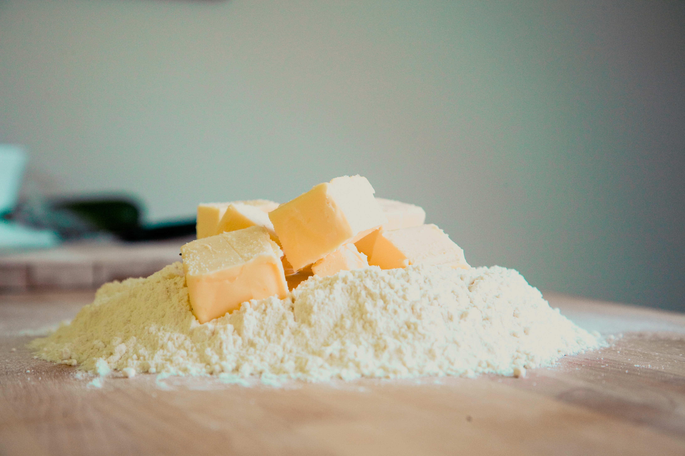

Everyone loves New Orleans chef and baker extradoinare Joy the Baker. Her Instagram page full of snacks and treats is a drool-worthy and her "Over Easy" cookbook is beyond anything I have ever seen. Her cookbook and her blog are filled with pages on how to make seemingly simple delicaies for you and your friends to enjoy. But what happens when something isn't as simple as it seems? A traditional chocolate chip cookie has a multitude of ways of going ary. Trust me, I should know. No worries, I have perfected my own way of creating chocolate perfection. My cheat sheet and I are here to help you do the same! Below is a comprehensive guide on how to make Joy the Baker's ooey-gooey chocolate chip cookies, so you do not have to wonder how she does it ever again!
Ingredients (Makes about 3 dozen cookies)
Instructions
Line two baking sheets with parchment paper and set aside.
Place half the butter in a medium skillet. Melt the butter over medium heat, swirling it in the pan occasionally. It’ll foam and froth as it cooks, and start to crackle and pop. Once the crackling stops, keep a close eye on the melted butter, continuing to swirl the pan often. The butter will start to smell nutty, and brown bits will form in the bottom. Once the bits are amber brown (about 2 1/2 to 3 minutes or so after the sizzling stops), remove the butter from the burner and immediately pour it into a small bowl, bits and all. This will stop the butter from cooking and burning. Allow it to cool for 20 minutes.

Beat the remaining 1/2 cup butter with the brown sugar for 3 to 5 minutes, until the mixture is very smooth.
Beat in the vanilla extract and molasses.
Pour the cooled brown butter into the bowl, along with the granulated sugar. Beat for 2 minutes, until smooth; the mixture will lighten in color and become fluffy.
Add the egg and egg yolk, and beat for one minute more.

Add the flour, salt, and baking soda, beating on low speed just until everything is incorporated.
Use a spatula to fold in the chocolate chips and pecans and finish incorporating all of the dry flour bits into the dough.
Scoop the dough onto a piece of parchment paper, waxed paper, or plastic wrap. Flatten it slightly into a thick disk, and refrigerate for at least 30 minutes. About 15 minutes before you’re ready to begin baking, place racks in the center and upper third of the oven and preheat your oven to 350°F.
Scoop the dough in 2 tablespoon-sized balls onto the prepared baking sheets. Leave about 2″ between the cookies; they’ll spread as they bake.

Sprinkle the cookies with sea salt, to taste — as much or as little as you like.
Bake the cookies for 12 to 15 minutes, until they’re golden brown. Remove them from the oven, and allow them to rest on the baking sheet for at least 5 minutes before moving them.
Serve warm; or cool completely, and store airtight at room temperature for several days. For longer storage, wrap well and freeze.
Enjoy!